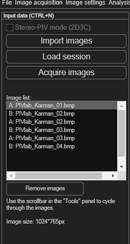
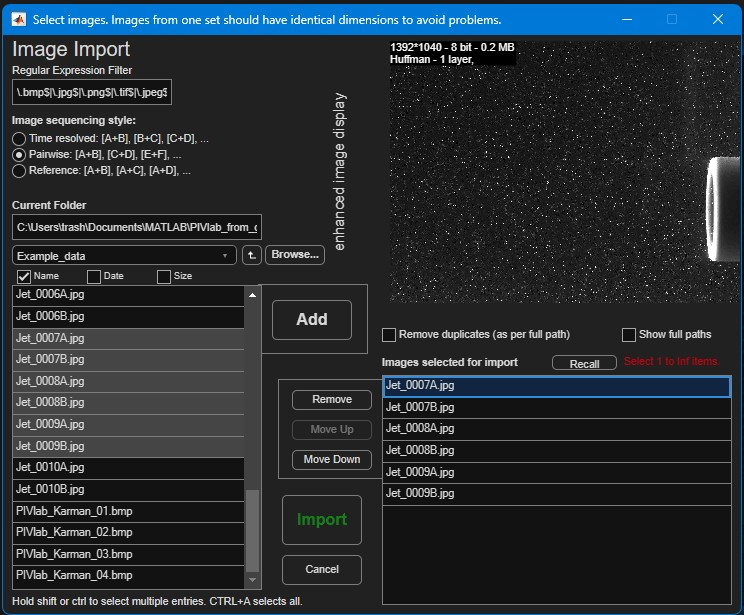

Sessions: images, settings and saved work
Before anything else in PIVlab, you need images loaded. This page covers importing an image sequence, and — because it trips people up — the difference between a session (everything: images, masks, results) and settings (just your configuration, reusable on a different dataset).
Starting a new session
Choose File → New session (Ctrl+N), or click the first icon in Main tasks quick access. This opens the Input data panel shown here, with three ways to get images in: Import images (from disk), Load session (resume earlier work — see below), and Acquire images (capture directly from a connected camera).

Importing images
Click Import images to open the image-import dialog shown below. Browse to your folder (a Regular Expression Filter field narrows down large folders), select the files you want, and choose an image sequencing style — this tells PIVlab how to pair up your files into frames:

| Style | Pairing | Use it for |
|---|---|---|
| Time resolved | [A+B], [B+C], [C+D], … |
A continuous recording where every image is reused as both the second half of one pair and the first half of the next — gives one vector field per consecutive frame step. |
| Pairwise | [A+B], [C+D], [E+F], … |
Discrete double-frame/double-exposure pairs, each captured with its own short time separation, with no overlap between pairs. |
| Reference | [A+B], [A+C], [A+D], … |
Comparing every image against one fixed reference frame — e.g. measuring growing displacement relative to a baseline. |
- Select the sequencing style that matches how your images were captured.
- Select the image files in the folder browser and click Add to move them into the Images selected for import list on the right. Use Remove, the move-up/move-down buttons, or Show full paths / Remove duplicates to clean up the list.
- Click Import to load them (or Cancel to back out). At least two images — one pair — are required.
The image list and moving between frames
Loaded frames appear in the Image list, each entry prefixed A: or B: for the first/second image of the pair. To move through frames, use the slider in the Tools panel at the top of the screen (tooltip: “Step through your frames here”), and Toggle to flip between the A and B image of the current frame.
Select one or more entries in the image list and click Remove images to drop them again. At least one pair must remain.
Sessions vs. settings — what's the difference?
PIVlab has two, easily confused, kinds of saved file. Knowing which one you want avoids a lot of head-scratching:
| Session | Settings | |
|---|---|---|
| Menu path | File → Load/Save → …PIVlab session | File → Load/Save → …PIVlab settings |
| Contains | Everything: image references, masks, ROI, calibration, analysis results, and all settings. | Only the configuration — algorithm choice, filter thresholds, colours, calibration setup, etc. No images and no results. |
| Use it to | Pause and resume the exact same project, or hand off a finished analysis to someone else. | Reuse a processing pipeline you've tuned on a different dataset, or share a configuration without sending any data. |
| Default file name | PIVlab_session.mat |
PIVlab_set_<username>.mat |
Saving and loading a session
- Save: File → Save → Save PIVlab session (or the
Load session button's counterpart in the menu). Choose a location;
the default name is
PIVlab_session.mat. - Load: click Load session in the Input data panel, or File → Load → Load PIVlab session. This restores images, masks, results and settings exactly as they were.
Saving and loading settings only
- Save: File → Save → Save current PIVlab settings. Choose a
location; the default name includes your username, e.g.
PIVlab_set_yourname.mat. - Load: File → Load → Import PIVlab settings. This rebuilds the interface to match the saved configuration, but does not touch your currently loaded images or results.
PIVlab_settings_default.mat automatically every time it starts,
and a handful of individual choices (e.g. Basic/Advanced mode, the last sequencing style
you used) are quietly remembered there as you work. That's not the same as saving your
whole current configuration, though — use Save/Load PIVlab
settings whenever you want a complete, named, reusable configuration you
can switch between or share.